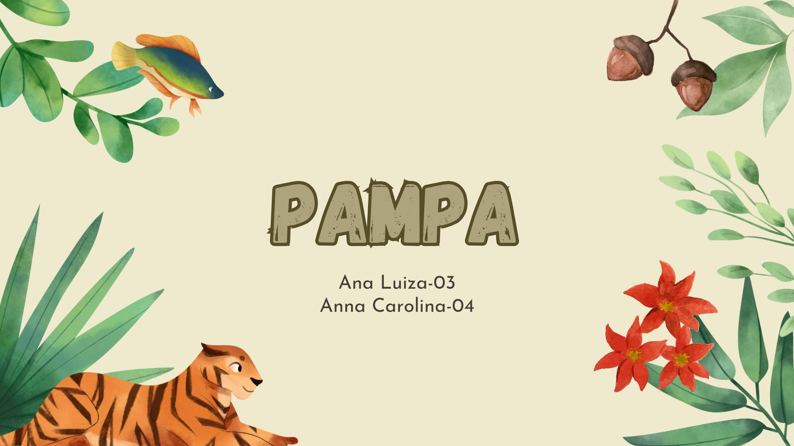
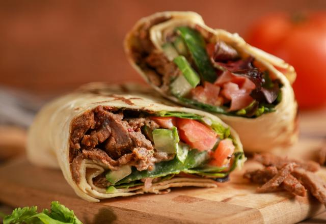

Me chamo Ana Luiza Weber, tenho 16 ano e estudo no Colégio Estadual Leonilda Papen
Goto de ler, jogar vôlei e cozinhar. Realizar pequena tarefa do dia me fazem feliz, estar com a família, viajar,
e rir com o amigos. Dizem que eu leio bem, sou esforçada e orgamizada
Minhas expêrincias de vida
1.Aluna monitora: Como aluna monitora eu ajudava colegas que tinham dificuldade na matéria que estávamo estudando
no período do contraturno. Aprendi a ter mai paciência e aprendi mais sobre o conteúdo. Me senti feliz capaz
2.Feira de Emprendeedorismo: Montamos um grupo e vendemo alimento típicos de uma região no mundo que nós mesmas
produzimos. Aprendi como mexer no caixa e como é difícil empreender. Me senti perdida, pois era algo novo
3.Tarefa dométicas: Ajudo nas tarefa de casa. Aprendi a fazer uae tudo e ter responsabilidade. Me sinto ntediada
fazendo e satifeita ao ver a casa limpa.
Minhas habilidades
Cozinhar
Cuidar de animais e crianças
O básico de tecnologia
Inglês báico
Organizar trabalhos
Meus projetos

Biomas brasileiros: Pampa
Slides que abordam algumas informações sobre o pampa, como: fatores biótico e abióticos e
teia alimentar.

Feira de Empreendedorismo
Os alunos venderam comidas típicas de uma região do mundo que os próprios fizeram.
Aprenderam algumas etapas sobre como montar o próprio negócio.
Debate a favor do aborto.
A turma foi até na câmara de vereadores debater ideias contrárias, como um debate a favor
ou contra o aborto.
Biomas brasileiros: Pampa
Este trabalhos é composto por slides que abordam sobre alguns tópicos do bioma Pampa. Foi feito por um gurpo que foi decidido em sala pela professora e os temas foram sortedados. O slides foram apresentados para a turma.
O trabalho aborda sobre o fatores abióticos e bióticos do Pampa. Mostra um exemplo de cadeia alimentar, com animais típicos desse bioma brasileiro, explicando quias são os produtore, conumidores primários, secumdários e terciários. Fala sobre as relações harmônicas e desarmônica que acontecem no Pampa.
Minha apirações
Aprender a tocar violão, coturar as própria roupas, investir, aprender autodefesa, saber várias receitas, inglês
avançado, aprender italiano e espanhol.
Tenho alguma profisões que me interessam: engenharia, arquitetura, farmácia, perícia criminal e bióloga.
Meus pai e avós, qu são exemplos de pessoas para mim. Mulheres que comanam coisas importantes, superarm diversos
desafios para esterm no cargo atual.